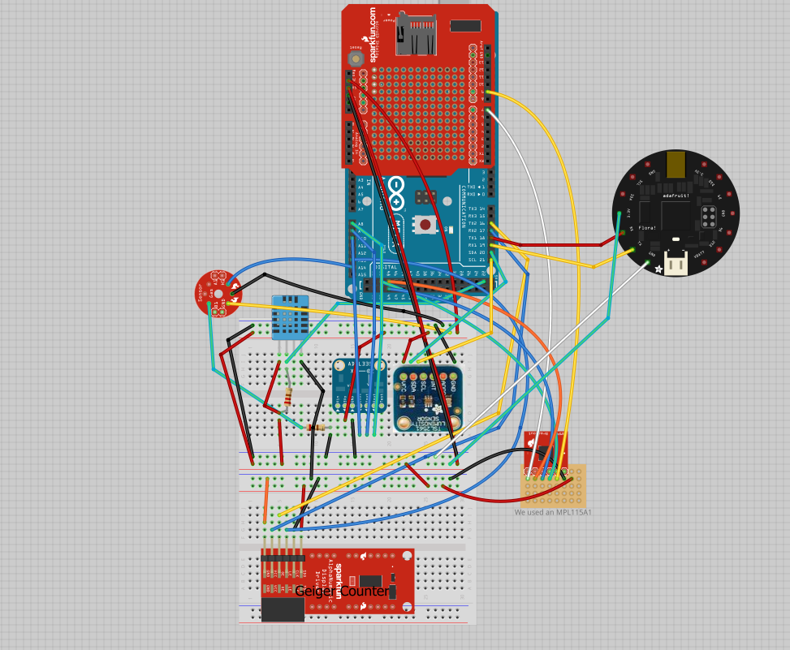
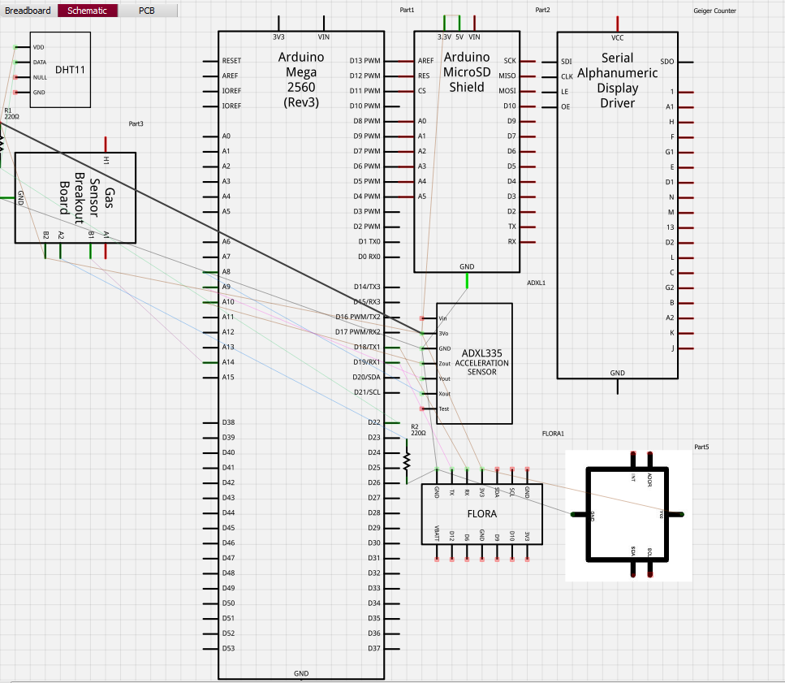

Purpose
The goal of this project is to launch a balloon containing a payload that uses various sensors powered by an Arduino Mega to record variables from the environment at 100,000 feet. The program writes the outputs of all of these sensors to an 8 GB SD Card on the Arduino Mega itself. The Arduino Mega uses a solar panel to recharge its battery.
Hardware Parts List
- Arduino Mega
- Data Logger Shield Kit
- Geiger Counter
- Gas Sensors
- GPS Flora
- Humidity and Temperature Sensor
- Barometer Sensor
- Accelerometer Sensor
- Luminosity Sensor
- Real Time Clock (comes with Data Logger Shield Kit)
Wiring


Schematic


Sample Data (from DATALOG.txt file on SD Card)
Geiger: 22
Outside Gas Sensor: 633
Fix: 0 quality: 0 (no GPS signal when we tried)
Humidity: 39.00
Temperature (Celsius): 27.00
Temperature (Fahrenheit): 80.60
Barometer Presure (kPa): 99.04
Orientation: 90 11 90
IR: 28 Full: 59 Visible: 31 Lux: 15
2013/7/18 10:49:14
Extra
This project was added on this repository for a weather balloon that takes pictures every ten seconds.